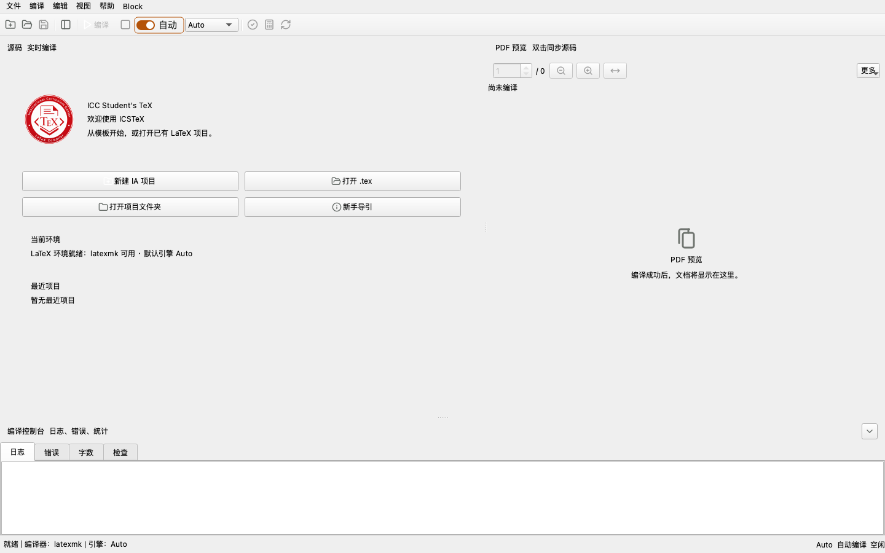
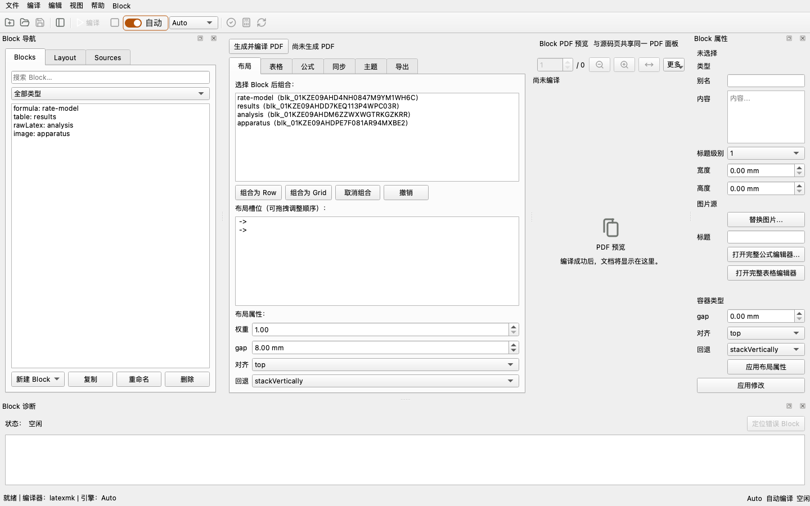
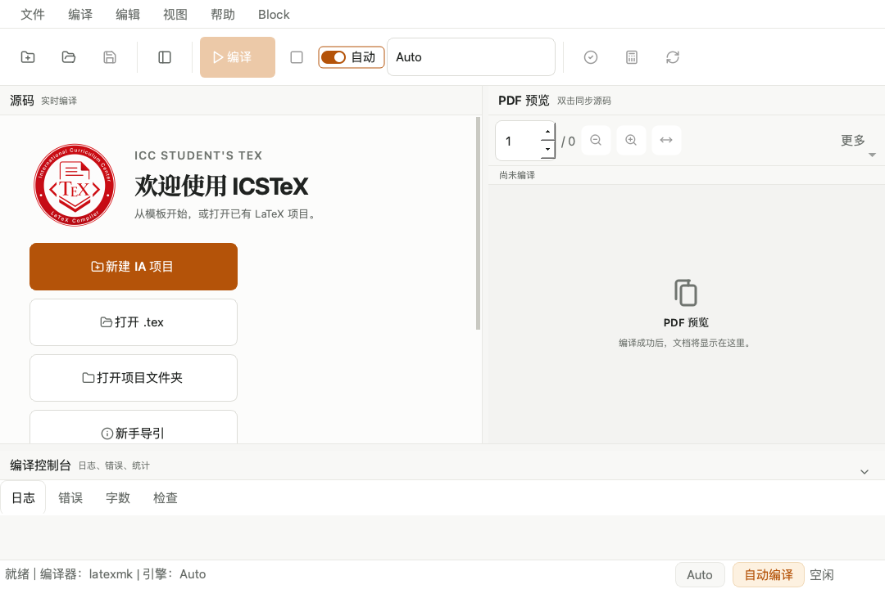

01 / LOCAL
本地优先
项目文件和编译默认留在你的设备；联网元数据查询必须由你主动触发。
ICSTeX 把源码、编译、PDF、公式和项目状态放到同一条可核验的工作流中。论文、日志与截图默认不会离开你的设备。
正在准备 Release 资产；发布后此处会提供校验过的下载链接。

A RELEASE SHOULD EXPLAIN ITSELF
01 / LOCAL
项目文件和编译默认留在你的设备；联网元数据查询必须由你主动触发。
02 / PROOF
编译根、源码版本与 PDF freshness 有明确边界；失败不会伪装成最新 PDF。
03 / NEXT STEP
中文优先的错误信息、环境检查和项目入口，帮助你定位下一步，而不是隐藏复杂度。
2.1 BETA 1 · FORMULA INTELLIGENCE
每项功能都保留 LaTeX 源码的可见性与最终确认权。
FORMULA EDITOR 2.0
在可视结构与 LaTeX 双视图之间工作；确认后只写回一次，支持 Undo / Redo。
\int_0^1 x^2\,dx = \frac{1}{3}
OPTIONAL LOCAL OCR
pix2tex 运行时可选安装，在本地识别。ROI、批量队列和逐项重试让每一步可控。
RESPONSIVE UI SCALE
90–150% UI Scale 与窄窗口适配，保留源码、PDF 和编译控制的清晰层级。


ONE RELIABLE PATH
HONEST BETA
Beta 不是无条件承诺。重要项目请保持自己的备份与版本记录。